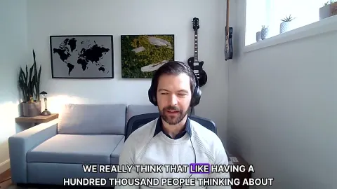
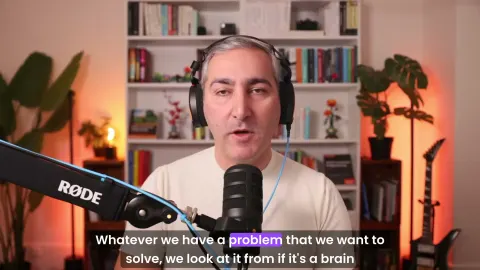
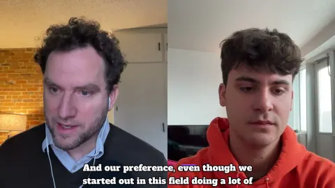
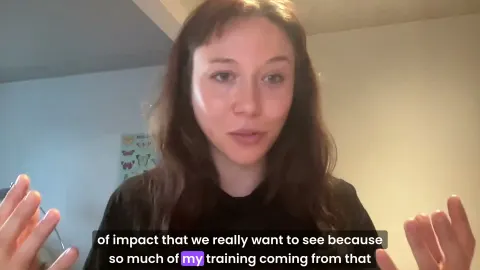
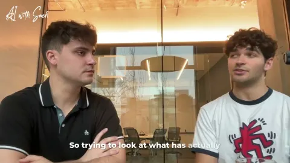
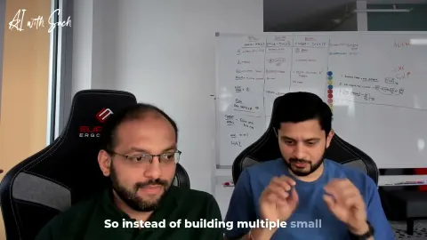
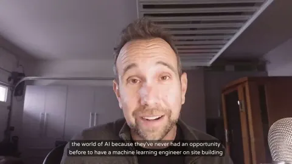

Themes
The questions the conversations keep coming back to.
01Adoption Is PeopleAI projects rarely fail on the technology. They fail because nobody changed how they work, nobody was consulted, or the problem was never defined.


02Who Gets Left BehindAutomation hits the bottom rungs first, and workers across white-collar jobs and entry-level roles lose the way they learned. Guests ask who pays, who trains and who decides.03Bias, Rules and ProofBias hides in postal codes and training images, and law and audits are catching up. The guests explain what regulation and verification actually look like.
04Hidden Human CostsBehind every model are data labelers, moderators and communities who were left out. The people who pay are rarely the ones in the room.

05Human Connection in AIAs AI companions, content and agents multiply, guests ask what only people can do: pray, listen, meet, build trust.

06Build What's NeededFounders and investors share how to validate before building, iterate on real pain, and stay modular while AI shifts under them.